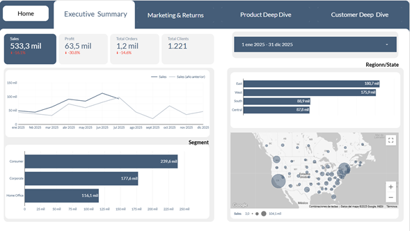
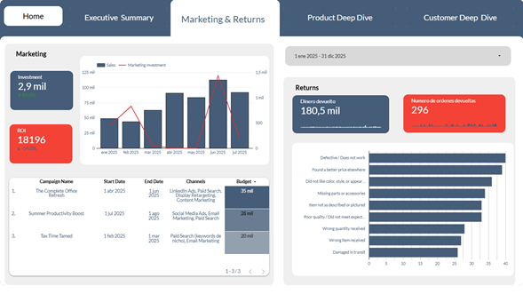
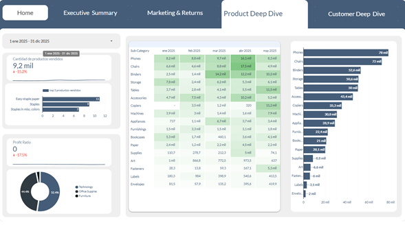
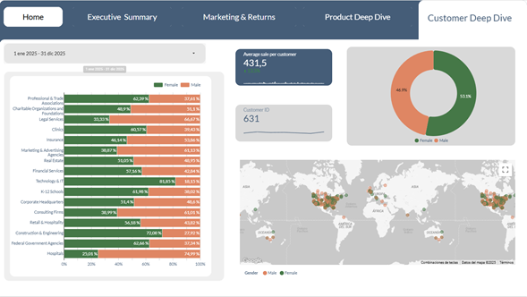
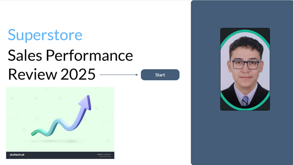

Dashboards, automatizaciones y herramientas de datos que resuelven problemas reales de reporte y preparación de información.
Dashboard
Superstore Sales Performance 2025
Panel de ventas con pestañas de resumen ejecutivo, marketing y devoluciones, producto y cliente. Compara la inversión de cada campaña con sus resultados y muestra la tasa de compra por género y el detalle de devoluciones por motivo.
Resultado: se identifican las campañas rentables y la causa principal de devoluciones (296 órdenes devueltas, 180,5 mil reembolsados).





Power BILooker StudioKPIs
App web
Normalizador de datos de distribuidores
App en Streamlit y Python, desarrollada en equipo, que lleva los archivos de cada distribuidora a un formato común antes de liquidar. Usa la API de Claude para decidir a qué columna estándar corresponde cada columna del archivo, detecta sola la fila de encabezados (hasta 10 filas), compara columnas sin distinguir mayúsculas y permite descargar la configuración en JSON.
Resultado: archivos con formatos distintos quedan comparables sin ajustes manuales. Pasó de ser un script de escritorio a una app publicada en Streamlit Cloud desde GitHub, que se usa desde el navegador.
PythonStreamlitpandasAPI de ClaudeGitHub
Pipeline
Liquidación mensual automatizada
Scripts en Python que reemplazan el copiar y pegar de cada mes en un archivo de liquidación y ranking de vendedores: leen los .xlsx de los distribuidores, suman las ventas por vendedor, llenan las hojas de liquidación e histórico y extienden los puntos acumulados. El Excel sigue siendo la salida final, y el mes se indica al ejecutar, así que se puede repetir sin duplicar datos.
Resultado: se reducen los pasos manuales de copiar, pegar y arrastrar fórmulas, y los errores que traen.
PythonpandasopenpyxlExcelETL
Pipeline
Consolidador de reportes de ventas
Script en Python que recorre las carpetas de enero a agosto, con varios archivos y hojas por carpeta (con logo, con o sin subtítulos), y los une en un solo Excel con los encabezados una vez. Completa el almacén vacío con el del archivo, omite filas de total e ignora las hojas de inventario.
Resultado: un solo archivo consolidado en lugar de abrir y copiar reporte por reporte.
Pythonpandasopenpyxl
Automatización
Ranking de mejores vendedores en Excel
Automatización con Python y openpyxl que arma el ranking de mejores vendedores. Conserva los colores del archivo, omite filas en blanco y reconoce las referencias de producto con expresiones regulares.
Resultado: el ranking sale listo, sin armarlo a mano cada vez.
PythonopenpyxlRegex
Dashboard
Tableros de un programa de lealtad (Mabe Ecuador)
Tableros en Power BI para seguir la participación de los vendedores en un programa de puntos: usuarios activos, cargas de puntos, redenciones y vendedores sin movimiento. Incluye las medidas DAX, el diseño de los tableros y la corrección del modelo de datos (relaciones y columnas faltantes). La actualización del dataset se automatiza con Power Automate.
Resultado: el equipo comercial ve la participación de los vendedores en un solo tablero.
Power BIDAXPower QueryPower AutomatePostgreSQL
Informe
Informe mensual de liquidaciones Softys
Informe en PDF del consolidado nacional de 15 distribuidoras: sell-out (cuota, venta y cumplimiento), desempeño por vendedor, premios por cumplimiento y líderes, con gráficos y comparativo contra el mes anterior. Las medidas, como los clientes únicos por mes y año, se calculan con DAX.
Resultado: las áreas ven qué distribuidoras y vendedores cumplen su meta y cómo cambió frente al mes anterior.
Power BIDAXExcelInformes gerenciales
Automatización
Envío programado de datos en Azure
Proceso en contenedores de Azure que genera y envía por correo, en horarios definidos, los datos que el área de soporte en salud preparaba a mano cada día y en la noche.
Resultado: se eliminaron las tareas manuales diarias y nocturnas.
AzureContenedoresCorreo programado
SQL
Depuración semanal de listados PQRSF
Limpieza y estandarización de los listados de peticiones, quejas y reclamos con SQL y Excel, antes de reportarlos.
Resultado: bajó de forma importante el tiempo de preparación semanal.
SQLMySQLExcel